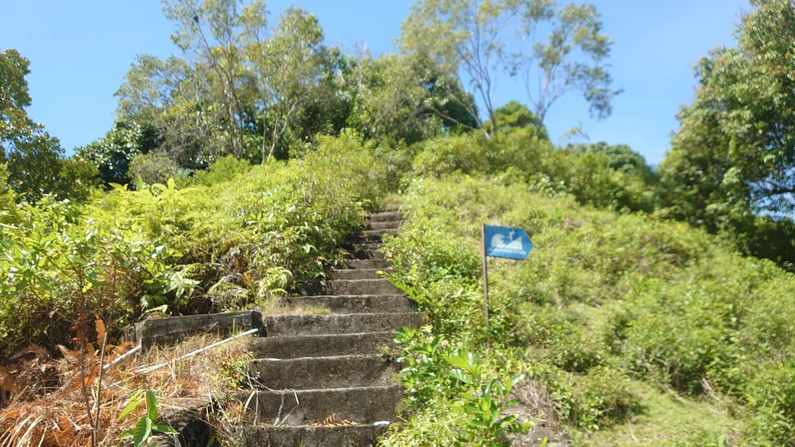

01 · Pengertian
Pengertian
Apa itu longsor dan apa penyebabnya?
Longsor terjadi ketika tanah di lereng yang labil bergerak turun dan menimbulkan bencana, terutama bagi warga yang tinggal di tempat lebih rendah. Badan Geologi menyebut kejadian ini gerakan tanah longsor.
Tiga pemicu
Hujan intensitas tinggi. BNPB menyebut hujan yang berlangsung beberapa hari. Badan Geologi menjelaskan, hujan lebat menambah tekanan air di dalam tanah dan menurunkan kekuatannya, sehingga lereng gagal.
Getaran gempa bumi dapat melemahkan kekuatan lereng.
Kegiatan manusia, seperti pemotongan lereng dan peledakan di area tambang.
Lereng gampang longsor kalau…
- kemiringan dan bentuk lerengnya
- kondisi geologinya
- kondisi air (hidrologi) di lereng
- tata guna lahannya berubah
- konstruksinya gagal
- saluran air permukaan belum baik

Sumber: BNPB, "Tanah Longsor" (27 Des 2017); Kementerian ESDM/Badan Geologi, "Curah Hujan Tinggi, Masyarakat Diminta Waspadai Gerakan Tanah Longsor" (6 Feb 2018); Kementerian ESDM/Badan Geologi, "Longsor Terjang Desa Pasirlangu, Badan Geologi Ingatkan Ancaman Longsor Susulan" (25 Jan 2026).
02 · Waspada
Tanda bahaya
Lima tanda yang harus kamu kenali.
Warga yang tinggal di perbukitan atau dekat tebing diminta mengenali tanda awal berikut dan terus memantau keadaan sekitar.
Retakan di tanah atau lereng
Retakan yang sejajar dengan tebing.

Mata air baru atau air keruh
Mata air baru muncul, atau air mata air dan sumur tiba-tiba keruh.

Pohon atau tiang miring
Pohon atau tiang yang tadinya tegak mulai miring.
Kerikil berjatuhan dari tebing
Butiran tanah dan kerikil mulai berjatuhan dari tebing.

Suara gemuruh dari dalam tanah
Terdengar gemuruh. Jangan tunggu, segera cari tempat aman.


Sumber: BNPB, "Tanah Longsor di Tapanuli Selatan Telan Dua Korban Meninggal" (23 Feb 2025); Badan Geologi, "Tanah Longsor Kembali Terjadi di Ponorogo, Masyarakat Diminta Waspada" (9 Apr 2017).
03 · Sebelum
Sebelum
Persiapan sebelum longsor.
Hujan intensitas tinggi, lebih dari
1 jamBNPB (23 Feb 2025) mengimbau warga mengevakuasi diri ke tempat yang lebih aman bila hujan intensitas tinggi berlangsung lebih dari satu jam.
Pantau hujan. Waspadai hujan dengan curah tinggi dan simak informasi tentang hujan serta kemungkinan longsor. BNPB menyebut radio sebagai salah satu sarana.
Siapkan perbekalan. Makanan dan minuman siap saji, senter beserta baterai cadangan, uang tunai secukupnya, dan obat-obatan sesuai kebutuhan.
Jaga lereng. Jangan menebang tanaman keras di lereng, jangan menggali lereng secara tegak lurus, dan atur aliran air permukaan di lereng.
Siap pergi. Bersiaplah mengevakuasi diri begitu pihak berwenang menginstruksikannya.


Sumber: BNPB, "Tanah Longsor" (27 Des 2017); Badan Geologi, "Tanah Longsor Kembali Terjadi di Ponorogo, Masyarakat Diminta Waspada" (9 Apr 2017); BNPB, "Tanah Longsor di Tapanuli Selatan Telan Dua Korban Meninggal" (23 Feb 2025).
04 · Saat
Saat
Saat longsor terjadi.
Bila terdengar suara gemuruh, segera keluar menuju tempat lapang yang tidak terhalang.
Cari tempat lapang dan perhatikan sisi lereng atau tanah yang longsor.

Ikuti arahan BPBD dan petugas setempat.
Sumber: BNPB, "Tanah Longsor" (27 Des 2017).
05 · Sesudah
Sesudah
Setelah longsor.
- Jangan segera pulang
Daerah bencana dan sekitarnya masih berpotensi longsor susulan, terutama saat dan setelah hujan deras, jadi warga diminta mengungsi ke lokasi yang aman.
- Bantu dengan aman
Bila diminta membantu evakuasi, pakai sepatu khusus dan peralatan keselamatan, pastikan pijakan cukup kokoh, dan jangan memperburuk keadaan di reruntuhan. Atau tunggu petugas.
- Hujan deras, tunda
Badan Geologi mengingatkan petugas agar tidak melakukan penanganan atau pencarian korban saat dan sesudah hujan deras, karena risiko longsor susulan masih tinggi.

Sumber: BNPB, "Tanah Longsor" (27 Des 2017); Badan Geologi, "Tanah Longsor Kembali Terjadi di Ponorogo, Masyarakat Diminta Waspada" (9 Apr 2017); Kementerian ESDM/Badan Geologi, "Longsor Terjang Desa Pasirlangu, Badan Geologi Ingatkan Ancaman Longsor Susulan" (25 Jan 2026).